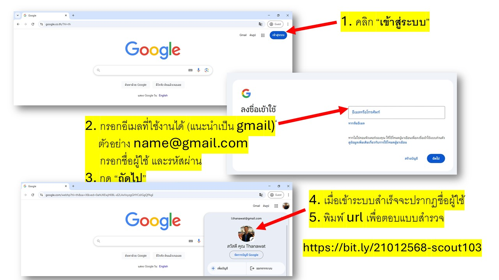

Survey Online By NARAPEO
แบบสำรวจความต้องการพัฒนาสมรรถนะด้านเทคโนโลยีสารสนเทศ รูปแบบออนไลน์ ของครูและบุคลากรทางการศึกษา ปีงบประมาณ พ.ศ.2568
แบบสำรวจนี้ มีจุดประสงค์เพื่อ
- สำรวจ รวบรวม ความต้องการพัฒนาตนเอง และวางแผนจัดกิจกรรม ประจำปีงบประมาณ พ.ศ. 2568
แบบสำรวจนี้ ดำเนินการตามมาตรการรักษาความลับ ของผู้ตอบแบบประเมิน ***แบบสำรวจฉบับนี้ จะไม่มีการบันทึก ชื่อ นามสกุล ผู้ให้ข้อมูล***
คำแนะนำเพิ่มเติม
- วิทยากรอาสา ไม่มีค่าใช้จ่าย
- กรณี มีค่าอุปกรณ์ วัสดุฝึก ผู้อบรมต้องจัดหามาเอง
- ยอมรับเงื่อนไข การขอรับเกียรติบัตร
- เกรียติบัตรสามารถนำไปนับรวมชั่วโมงเพื่อยื่นของใบประกอบวิชาชีพได้
- เมื่อกด "ยินยอม" ข้อมูลสำรวจจะถูกส่งไปยังอีเมล์ของท่าน
